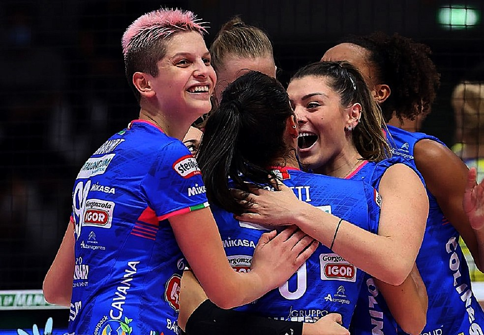
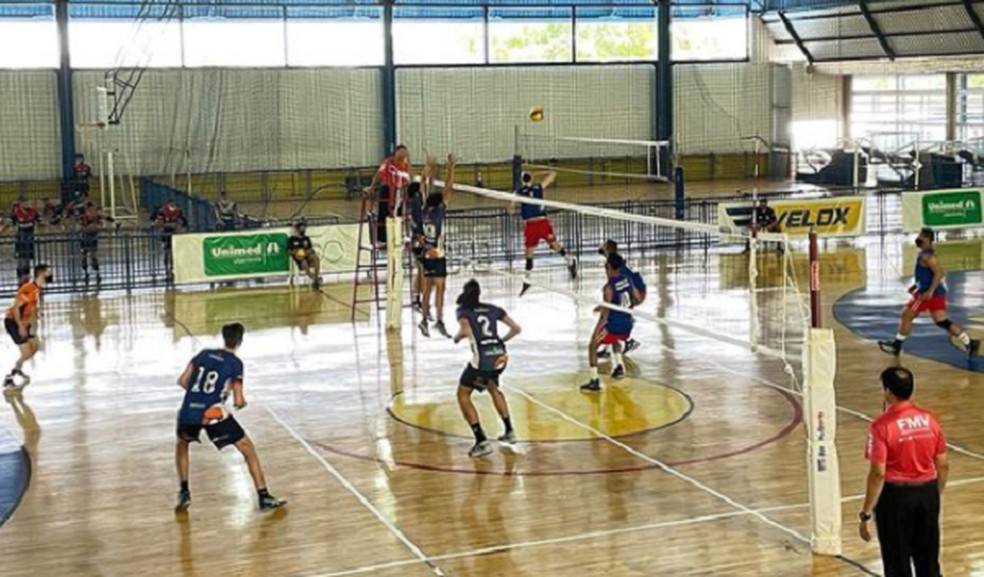
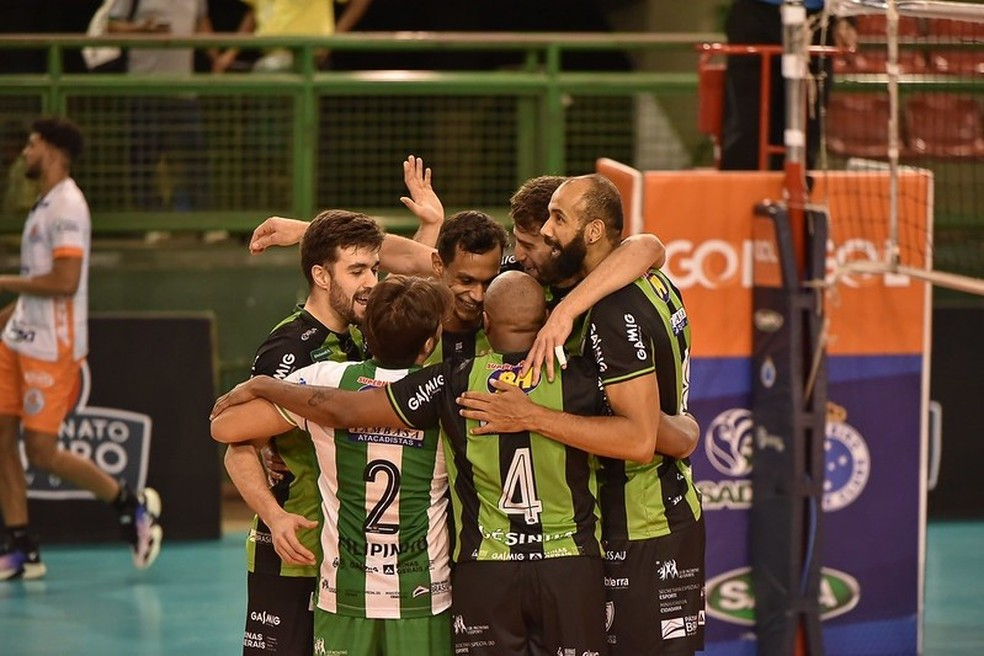
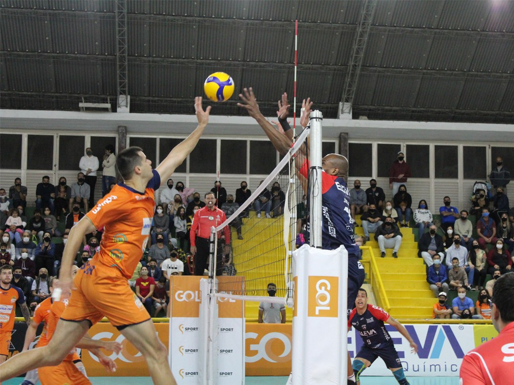
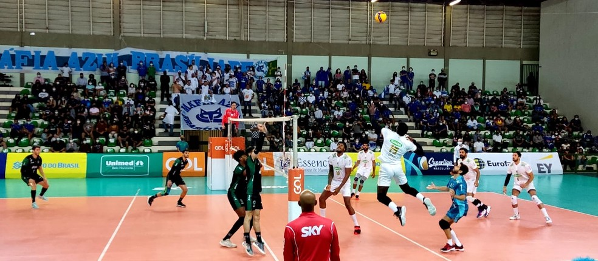
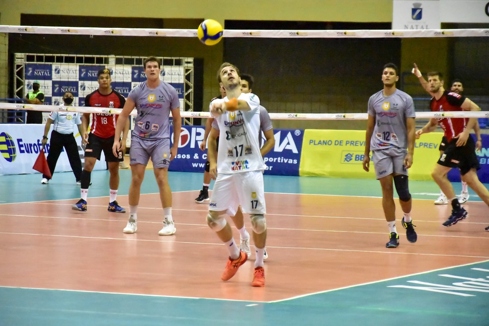

Rosamaria cita ansiedade por estreia na Liga dos Campeões: "Todo mundo fala que é bom"
Novara, time da catarinense, encara o Turk Hava Yollan, da Turquia, na próxima quinta-feira.
Academia do Vôlei abre seletiva masculina para atletas nascidos entre 2002 e 2006
Processo seletivo para entrada nas categorias de base do time masculino do Vôlei Uberlândia está com inscrições abertas; veja como se inscrever.
Montes Claros América Vôlei entra em quadra nesta quarta contra o Uberlândia
Partida válida pela quinta rodada da Superliga será às 17h no ginásio Vila Nova, em Monte Carmelo.
Vôlei São José recebe o Guarulhos e busca a reabilitação na Superliga Masculina
Equipe joseense vem de derrota para o Blumenau no último fim de semana.
Cruzeiro vence o Brasília fora de casa, segue 100% e dorme na liderança da Superliga
Equipe mineira é muito segura nos dois primeiros sets, sofre com crescimento adversário, mas fecha o jogo em 3 sets a 1, com parciais de 18/25, 16/25, 25/23 e 19/25.
Natal busca reabilitação na Superliga diante do líder Minas; ingressos estão à venda
Jogo é nesta quarta-feira, às 21h30, no ginásio Nélio Dias, na Zona Norte de Natal.